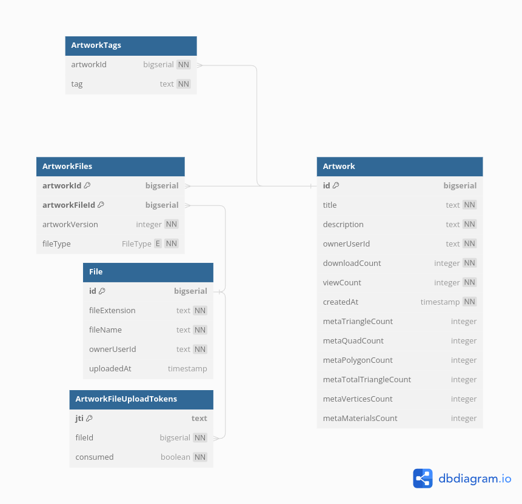

Database Tables
These documents reflect the tables in the design stage and may not be up to date. Use as reference only.

DBML
The following is a DBML description of the database, Create a diagram at https://dbdiagram.io/ to view it.
// Display: https://dbdiagram.io/
// Docs: https://dbml.dbdiagram.io/docs/
Table File {
id bigserial [pk]
sha256 char(64) [not null, unique] // Hash of the whole file. Can be translated into a URI.
fileExtension text [not null] // Used to select the three.js loader
ownerUserId bigserial [not null]
uploadedAt timestamp [not null]
}
Table Artwork {
id bigserial [pk]
title text [not null]
description text [not null]
ownerUserId bigserial [not null]
downloadCount integer [not null, default: 0]
viewCount integer [not null, default: 0]
createdAt timestamp [not null]
metaTriangleCount integer
metaQuadCount integer
metaPolygonCount integer
metaTotalTriangleCount integer
metaVerticesCount integer
metaMaterialsCount integer
}
Table ArtworkFiles {
artworkId bigserial [ref: > Artwork.id]
artworkFileId bigserial [ref: > File.id]
artworkVersion integer [not null]
indexes {
(artworkId, artworkFileId) [pk]
}
}
Table ArtworkTags {
artworkId bigserial [ref: > Artwork.id]
tag text [not null]
}
Table ArtworkFileUploadTokens {
id bigserial [pk]
artworkFileId bigserial [ref: > File.id, not null]
token text [not null]
expiryTime timestamp [not null]
}